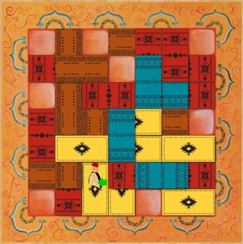

Marrakech
Board Game Arena 官方规则文档
Object of the Game
The rug market in Marrakesh square is on tenterhooks, the best salesperson will soon be named.
Each salesperson tries to have the highest number of rugs visible at the end of the game while also amassing the biggest fortune.
The player with the biggest fortune (worked out by adding together the number of visible rugs and the amount of money held by each salesperson) wins.
Game play
Each player begins with 30 Dirhams and 12 rugs of the same colour.
In turn, players make the following three moves:
- 1. they move Assam,
- 2. if necessary, they pay their opponent,
- 3. they then lay one of their own rugs.
Moving Assam
The player chooses in which direction they want to move Assam before throwing the dice, Assam can be left alone or turned 90° left or right (he cannot turn 180°).
The player then throws the dice: the number of slippers indicated on the dice determines how many squares Assam is moved.
Assam moves in a straight line (not diagonally) in the direction initially selected.
(The game uses a six sided die with pip faces of 1, 2, 2, 3, 3, 4.)
If Assam leaves the market, he follows the about-turn signalled by the swirls at the edge of the board. His movement off the board doesn't count towards the number of steps he takes.
Payments between salespeople
If Assam ends his move on an opponent's rug, the active player must make a payment to that rug's owner, equal to the total connected area of that rug colour in squares. (Squares are only connected if their sides are touching, it does not count if they only touch diagonally.)

The player makes no payment if Assam ends his move on an empty square, or on one of the player's own rugs, or on one of an eliminated player's rugs.
If a player does not have enough dirhams to pay when required, that player is eliminated from the game.
Laying rugs
The player then lays one of their rugs next to the square where Assam has finished, an edge of the rug must be placed against one of the four sides of this square.
A rug cannot be placed to entirely cover an opponent's rug. It can only be placed on two empty squares or an empty square and half a rug or two halves of two different rugs.
End of the game
The game ends once the last rug is laid.
Each half of a rug visible and each Dirham counts as one point, and the player with the most points wins the game. In the case of a tie, the player with the most Dirhams wins.
The game also ends if all players except one have been eliminated by not being able to pay when requested. In this case, the remaining player is declared the winner.
2-player rules
In the two-player game, each player receives 24 rugs, in two different colours. These are shuffled into a single draw pile, and each turn, a player will be playing a rug of a random colour.
The two colours remain separate for calculating payments: an area of mixed yellow and red rugs is not counted as a single area for scoring, even though they are owned by the same player.